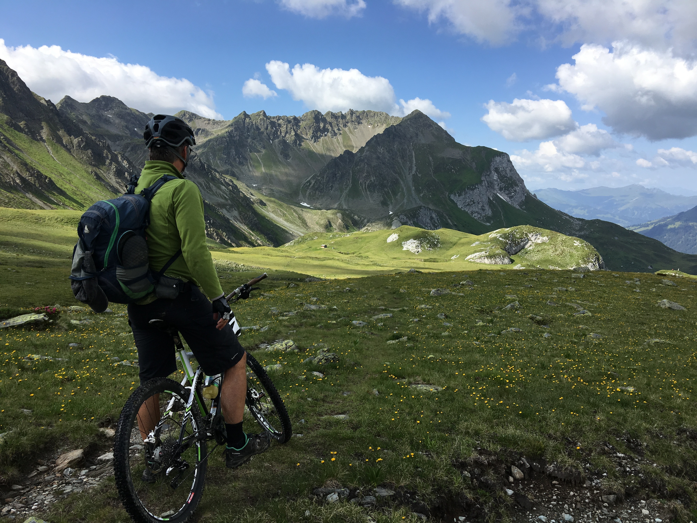

Millerton (Out and Back)
Clovis, CA
Length: 22.8 miles

Whether dirt or gravel roads, there are many trails throughout Fresno County and below is a list of Fresno's most popular biking trails.
Biking Organizations: Fresno Cycling Club, Fresno County Bicycle Coalition, Clovis Cycling Meetup Group